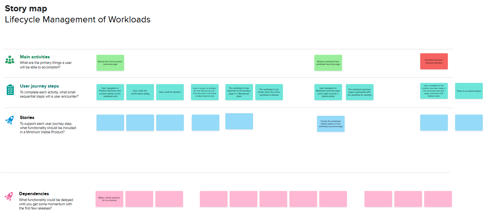
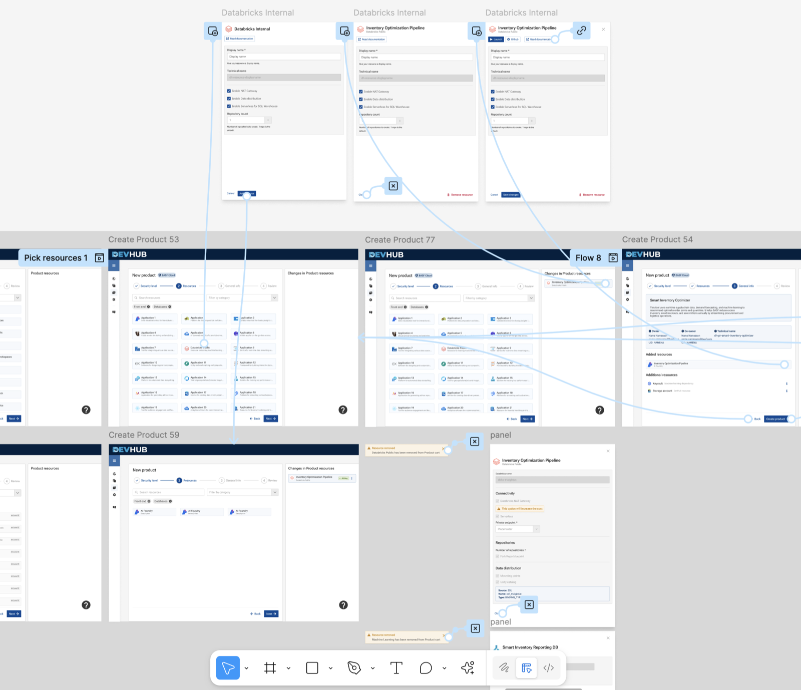
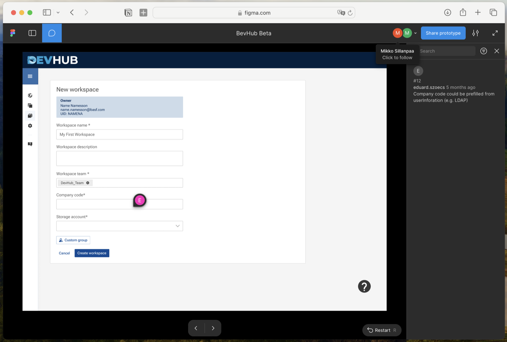

Merging Three Developer Platforms into One Unified Experience
Three internal tools, three overlapping user groups, and a mandate to consolidate — with no shared definition of what that meant. I spent the first weeks figuring out the real problem before anyone designed anything.
Users weren't worried about finding their way around. They were worried about losing what they already had — features, workflows, and the ability to build without needing expert help.
Ran interviews that surfaced five specific anxieties: feature parity, safe migration, cost, support, and whether novice users could still build independently. Built those into the product brief so POs had user evidence, not assumptions, to prioritise against.
Three POs aligned on a brief grounded in what users were afraid of losing — not just what they wanted to build. The prioritisation table stopped being about features and started being about user anxiety.
The Problem
Three internal platforms, three overlapping user groups, no shared language — and a mandate to consolidate already decided.
Background
A consolidation brief without a shared definition of the problem
BASF had three internal developer tools: Argus, the Data Science Platform, and the AppStore. Each had grown to serve a different user group. A business decision had already been made to merge them into a single platform — DevHub. What hadn't been defined was what that meant for the people who used them every day.
The users fell into three groups: developers building internal apps, data scientists running pipelines and models, and non-technical users who built and consumed apps without needing to understand the infrastructure behind them. For all three groups, the consolidation announcement raised the same underlying question: what am I going to lose?
Discovery
Understanding the platforms before asking users about them
Before talking to anyone, I reviewed platform documentation, analytics, and tutorial videos. I wanted to understand what each platform could actually do — before asking users what they were afraid of losing.
Reviewed Argus, Data Science Platform, and AppStore documentation, analytics, and video walkthroughs independently before any interviews.
Mapped ownership, priorities, and where they disagreed. Three POs meant three roadmaps and three definitions of done — understanding the fault lines early was essential.
Ran interviews across all three user groups. The consistent finding wasn't confusion about which tool to use — it was anxiety about the merger itself. Five concerns came up repeatedly: feature parity, safe migration, cost, support quality, and whether novice users could still build without expert help.
Key Finding
Five concerns — none of them about navigation
Feature parity was the biggest: will the new platform do everything my current tool does? Migration safety was close behind. Then cost — free tiers had existed in the legacy tools but hadn't been defined yet in DevHub. Support quality: would a merged system mean slower, less specialised help? And for novice users specifically: will I still be able to build without a developer's help?
These weren't UX problems to be solved with better navigation. They were product questions the POs needed to answer — and the brief had to make that visible.

The Hard Part
Three POs, a hackathon forcing function, and technical constraints that weren't visible until mid-discovery
Stakeholder alignment
Three product owners, three roadmaps, three definitions of done. When priorities clashed, I built a scoring table — impact, effort, technical feasibility — and put it in front of everyone. It moved arguments about features into conversations about user problems.
Technical constraints
Engineering was building on Backstage. Some constraints only became clear mid-discovery — things users needed that couldn't be built in this phase. I had to design for what was actually buildable while being honest about what would come later.
Hackathon forcing function
An internal hackathon forced a prioritisation call ahead of schedule. I drafted a brief that reframed the decision — not "which feature do we want" but "which user problem is most urgent." That shift gave the POs a shared basis for the call.
Handoff gap
There was no design handoff process when I started. I moved conversations about design decisions from GitHub issues into Figma comments — engineers had context next to the thing they were building. The back-and-forth dropped noticeably.
How Might We…
Merge three platforms into one without developers losing capability, data scientists losing their workflows, or novice users losing the ability to build without expert help — and make the answers to those five anxieties visible in the product before anyone has to ask?
Design
End-to-end journeys, a guided wizard, and a handoff workflow built from scratch
Once the brief was agreed, I moved into design. Three user groups meant three main flows — app creation for developers, pipeline onboarding for data scientists, and a guided dashboard for novice users. I built them in parallel, keeping the structure consistent enough to feel like one product, while each flow addressed the specific anxieties of the group using it.
For app creation, data pipeline management, and dashboard consumption — mapped across developer, data scientist, and novice user paths.
Mapped every significant capability across Argus, the Data Science Platform, and the AppStore to confirm what DevHub would cover. This became the answer to the biggest user concern — and the basis for honest communication about what wasn't in scope for the first release.
Reduced the onboarding path for novice users to a single guided flow. This was the direct design response to the feature parity concern: novice users needed proof that they could build in DevHub without knowing the infrastructure behind it.
All components built within the BASF Atoms design system. Where patterns didn't exist — primarily the app wizard step flow and unified dashboard state management — I proposed and documented extensions, keeping them aligned with the existing token structure.
Free tiers had existed in the legacy tools but hadn't been defined in the unified DevHub. Under my supervision, a master's student designed how pricing tiers and support options would be surfaced within the platform — making them visible to users before they had to ask. Their output was integrated directly into the live system.

Testing & Iterations
Walkthrough sessions built around scenarios, not open feedback
Before each handoff, I ran walkthrough sessions with the product owners and developers. The sessions were structured around specific scenarios — not open-ended feedback. The app wizard and permissions model both went through two rounds of iteration based on what those sessions surfaced.
I also mentored a master's student on an internship project on the same platform. Their work ended up integrated into the live system, which gave the wizard flow an extra round of real validation.

What I'd Do Differently Here
The walkthrough sessions were with product owners and developers — not the novice users whose concern about building without expert help was the central design question. Even two sessions with non-technical internal users would have told me whether the wizard actually answered that anxiety. It's the one gap I'd close first.
Results
Unified product vision — three legacy systems, one agreed direction
What I'd Do Differently
Push harder for direct user access earlier. A lot of discovery was mediated through Product Owners — efficient but filtered. More direct exposure would have made the prioritisation table stronger and surfaced the novice onboarding gap sooner.
Establish a quantitative baseline before starting. We knew things were fragmented, but we didn't have a number attached to it. Having one would have made this outcomes section significantly cleaner.
Final Thoughts
What I learned about navigating complexity without a clear brief
The brief was about UI consolidation. The real problem was that nobody had named what the merger meant for the people who had to keep using these tools every day. When a consolidation is announced without answering the questions users are actually asking — will I keep my features, can I migrate safely, will this cost more, will support get worse, can I still build without help — those questions don't disappear. They just become the friction that kills adoption.
Getting the POs to accept that those five concerns were design requirements, not just comms problems, was what made the brief useful. It wasn't a roadmap. It was a translation layer between user anxiety and product decisions.
Next step: quantitative data from the wizard flow — steps-to-completion, error rates, support ticket volume before and after. That's what would turn this from a strong story into an undeniable one.
Help me improve this case study
Takes about 30 seconds — I read every response.
Are you here as a...
Was this case study relevant to what you were looking for?
What's missing or unclear? (optional)